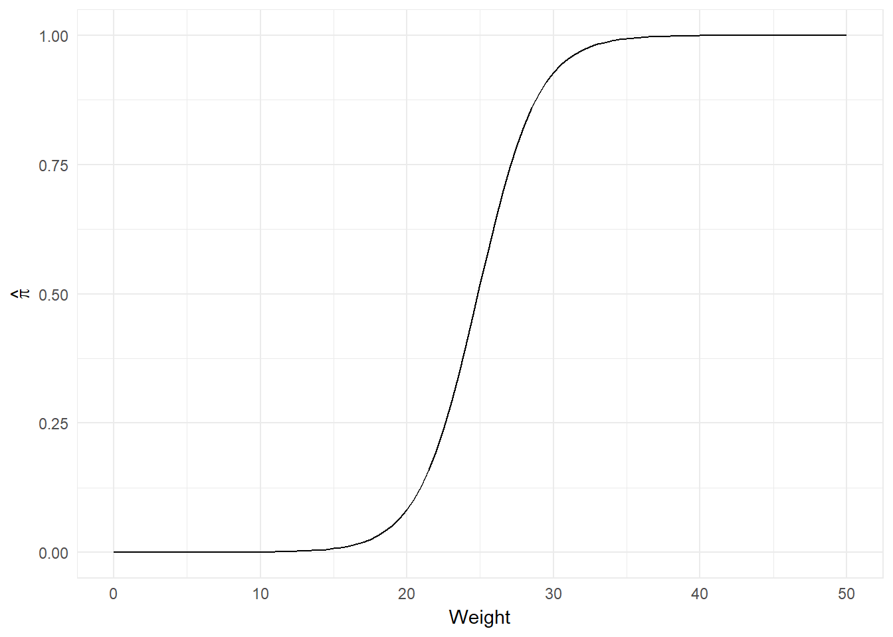

\[ \newcommand{\Prob}{\operatorname{P}} \newcommand{\E}{\operatorname{E}} \newcommand{\Var}{\operatorname{Var}} \newcommand{\Cov}{\operatorname{Cov}} \newcommand{\se}{\operatorname{se}} \newcommand{\re}{\operatorname{re}} \newcommand{\ybar}{{\overline{Y}}} \newcommand{\phat}{{\hat{p}}} \newcommand{\that}{{\hat{T}}} \newcommand{\med}{{\tilde{Y}}} \]
\[ \ln(\theta) = \begin{cases} -7.00 + 0.10A + 1.20S \text{, if } R = 0 \\ -6.70 + 0.10A + 1.40S \text{, if } R = 1 \end{cases} \] \[ OR_{YS} = \begin{cases} e^{1.20} = 3.3201 \text{, if } R = 0 \\ e^{1.40} = 4.0552 \text{, if } R = 1 \end{cases} \] \[ \ln(\theta) = \begin{cases} -7.00 + 0.10A + 0.30R \text{, if } S = 0 \\ -5.80 + 0.10A + 0.50R \text{, if } S = 1 \end{cases} \] \[ OR_{YR} = \begin{cases} e^{0.30} = 1.3499 \text{, if } S = 0 \\ e^{0.50} = 1.6487 \text{, if } S = 1 \end{cases} \]
Those coefficients represent the average additive increase in the log odds in favour, when the other variable is set to 0, based on the sample. i.e. There is a 1.20 increase on average in the log odds in favour for a white person, when they smoke at least on pack a day, and a 0.30 increase on average in the log odds in favour for a person who smokes at lease one pack a day, when they are black.
The p-values are testing: \[ H_{0}: \beta_{i} = 0 \] \[ H_{1}: \beta_{i} \neq 0 \] for a given i.
\[ \ln(\theta) = \begin{cases} -7.00 + 0.10A + 1.20S \text{, if } R = 0 \\ -6.70 + 0.14A + 1.40S \text{, if } R = 1 \end{cases} \]
\[ \ln(\theta) = -12.715 + 1.106(1) + 0.468(20) = -2.249 \implies \Prob(Y = 1 | X) = \frac{e^{-2.249}}{1 + e^{-2.249}} = 0.0954 \] \[ \ln(\theta) = -12.715 + 0.468(20) = -3.355 \implies \Prob(Y = 1 | X) = \frac{e^{-3.355}}{1 + e^{-3.355}} = 0.0337 \] \[ \implies \frac{0.0954}{0.0337} = 2.8293 \]
\[ \theta = e^{-12.715 + 1.106(1) + 0.468(20)} = 0.1055 \] \[ \theta = e^{-12.715 + 0.468(20)} = 0.0349 \] \[ \implies OR = \frac{0.1055}{0.0349} = 3.0222 \implies \ln(3.0222) = 1.106 \]
Therefore the odds ratio is on average equal to the \(e^{\beta_{i}}\) of the differing parameter between the two predictions.
\[ \sigma_{c} = 0.80 \implies \sigma_{c} \hat{\beta}_{c} = 0.80(-0.509) = -0.4072 \] \[ \sigma_{x} = 2.11 \implies \sigma_{x} \hat{\beta}_{x} = 2.11(0.458) = 0.9664 \]
Thus for every 1 sd increase in colour, the odds in favour increase on average by a multiplicative factor of 0.6655. For every 1 sd increase in width, the odds in favour increase on average by a multiplicative factor of 2.6284. Both of these are based on the sample.
logit_crab_4.27 <- function(colour, weight){
-10.071 - 0.509*colour + 0.458*weight
}
prob_crab_4.27 <- function(colour, weight){
exp(logit_crab_4.27(colour, weight))/(1 + exp(logit_crab_4.27(colour, weight)))
}
colour <- 1:4
weight <- c(24.9, 27.7)
results_crab <- tibble(
colour = as.numeric()
,weight = as.numeric()
,probability = as.numeric()
)
results_crab_row <- 1
for (i in colour){
for (j in weight){
results_crab[results_crab_row,] <- cbind(i, j, prob_crab_4.27(colour = i, weight = j))
results_crab_row <- results_crab_row + 1
}
}
results_crab## # A tibble: 8 x 3
## colour weight probability
## * <dbl> <dbl> <dbl>
## 1 1 24.9 0.6951272
## 2 1 27.7 0.8915430
## 3 2 24.9 0.5781540
## 4 2 27.7 0.8316827
## 5 3 24.9 0.4517011
## 6 3 27.7 0.7481180
## 7 4 24.9 0.3311917
## 8 4 27.7 0.6409754For changes over the middle 50% of width, there is a greater change on average in probability than there is for each unit increase in colour.
grad_data_summary <-
tibble(
Race = rep(c("W", "B"), each = 2)
,Gender = rep(c("F", "M"), times = 2)
,`Sample Size` =
c(
796
,1625
,143
,660
)
,Graduates =
c(
498
,878
,54
,197
)
) %>%
mutate(
`Drop Outs` = `Sample Size` - Graduates
,Proportion = Graduates / `Sample Size`
)
grad_data <-
tibble(
Race =
rep(
c("B", "W")
,times =
(grad_data_summary %>%
group_by(Race) %>%
dplyr::select(
Race
,`Sample Size`
,Graduates
,`Drop Outs`
,Proportion
) %>%
summarise_all(sum)
)$`Sample Size`
)
,Gender =
c(
rep(
c("F", "M")
,times =
(grad_data_summary %>%
filter(Race == "B")
)$`Sample Size`
)
,rep(
c("F", "M")
,times =
(grad_data_summary %>%
filter(Race == "W")
)$`Sample Size`
)
)
,Graduated =
c(
rep(
0:1
,times =
c(
(grad_data_summary %>%
filter(Race == "B", Gender == "F")
)$`Drop Outs`
,(grad_data_summary %>%
filter(Race == "B", Gender == "F")
)$Graduates
)
)
,rep(
0:1
,times =
c(
(grad_data_summary %>%
filter(Race == "B", Gender == "M")
)$`Drop Outs`
,(grad_data_summary %>%
filter(Race == "B", Gender == "M")
)$Graduates
)
)
,rep(
0:1
,times =
c(
(grad_data_summary %>%
filter(Race == "W", Gender == "F")
)$`Drop Outs`
,(grad_data_summary %>%
filter(Race == "W", Gender == "F")
)$Graduates
)
)
,rep(
0:1
,times =
c(
(grad_data_summary %>%
filter(Race == "W", Gender == "M")
)$`Drop Outs`
,(grad_data_summary %>%
filter(Race == "W", Gender == "M")
)$Graduates
)
)
)
)
logit_grads <- glm(Graduated ~ Race + Gender, data = grad_data, family = binomial)
summary(logit_grads)##
## Call:
## glm(formula = Graduated ~ Race + Gender, family = binomial, data = grad_data)
##
## Deviance Residuals:
## Min 1Q Median 3Q Max
## -1.4020 -1.2467 0.9684 1.1097 1.5548
##
## Coefficients:
## Estimate Std. Error z value Pr(>|z|)
## (Intercept) -0.50161 0.10004 -5.014 5.33e-07 ***
## RaceW 1.01547 0.08723 11.641 < 2e-16 ***
## GenderM -0.35244 0.08044 -4.381 1.18e-05 ***
## ---
## Signif. codes: 0 '***' 0.001 '**' 0.01 '*' 0.05 '.' 0.1 ' ' 1
##
## (Dispersion parameter for binomial family taken to be 1)
##
## Null deviance: 4469.1 on 3223 degrees of freedom
## Residual deviance: 4289.1 on 3221 degrees of freedom
## AIC: 4295.1
##
## Number of Fisher Scoring iterations: 4Let: \[ Y_{i} = \begin{cases} 0 \text{, if i didn't graduate} \\ 1 \text{, if i didn't graduate} \end{cases} \] \[ R_{i} = \begin{cases} 0 \text{, if i is black} \\ 1 \text{, if i is white} \end{cases} \] \[ G_{i} = \begin{cases} 0 \text{, if i is female} \\ 1 \text{, if i is male} \end{cases} \]
Then: \[ \ln\left( \theta_{i} \right) = -0.5016 + 1.0155R_{i} - 0.3524G_{i} \]
logit_grads %>%
coef %>%
exp %>%
round(4)## (Intercept) RaceW GenderM
## 0.6056 2.7607 0.7030On average, the odds increases by a multiplicative factor of \(e^{1.0155}=2.7606\) if someone is white vs. black, based on the sample. On average, the odds decreases by a multiplicative factor of \(e^{-0.3524}=0.7030\) if someone is male vs. female, based on the sample. All the coefficients are also deemed to be highly significant.
grad_data_summary %<>%
mutate(
`Predicted Proportion` =
predict(
logit_grads
,newdata =
grad_data_summary %>%
dplyr::select(Race, Gender)
,type = "response"
)
)
grad_data_summary %>%
dplyr::select(-c(`Sample Size`, Graduates, `Drop Outs`))## # A tibble: 4 x 4
## Race Gender Proportion `Predicted Proportion`
## <chr> <chr> <dbl> <dbl>
## 1 W F 0.6256281 0.6257107
## 2 W M 0.5403077 0.5402673
## 3 B F 0.3776224 0.3771629
## 4 B M 0.2984848 0.2985844logit_crab_4.36 <- function(weight){
-12.351 + 0.497*weight
}
prob_crab_4.36 <- function(weight){
exp(logit_crab_4.36(weight))/(1 + exp(logit_crab_4.36(weight)))
}ggplot(
data = tibble(weight = c(0, 50))
,aes(weight)
) +
stat_function(fun = prob_crab_4.36) +
labs(
x = "Weight"
,y = expression(hat(pi))
) \[ \mu = -\frac{-12.351}{0.497} = 24.8511 \] \[ \sigma = \frac{1.814}{0.497} = 3.6499 \]
\[ \mu \mp 2\sigma = 24.8511 \mp 2(3.6499) = [17.5513, 32.1509] \]
(12.351/0.497 + 2 * 1.814/0.497*c(-1,1)) %>%
prob_crab_4.36 %>%
round(4)## [1] 0.0259 0.9741crabs_data <-
read_csv(
file = "http://grahamst.at/projects/STAT_541/STAT_541_Assignments/Week_06_Data_5.01.csv"
) %>%
mutate(
satell_bool = if_else(satell > 0, 1, 0)
,weight = weight/1000
)## Parsed with column specification:
## cols(
## color = col_integer(),
## spine = col_integer(),
## width = col_double(),
## satell = col_integer(),
## weight = col_integer()
## )logit_crab_5.01 <-
crabs_data %>%
glm(
satell_bool ~ weight + width
,data = .
,family = binomial
)
summary(logit_crab_5.01)##
## Call:
## glm(formula = satell_bool ~ weight + width, family = binomial,
## data = .)
##
## Deviance Residuals:
## Min 1Q Median 3Q Max
## -2.1127 -1.0344 0.5304 0.9006 1.7207
##
## Coefficients:
## Estimate Std. Error z value Pr(>|z|)
## (Intercept) -9.3547 3.5280 -2.652 0.00801 **
## weight 0.8338 0.6716 1.241 0.21445
## width 0.3068 0.1819 1.686 0.09177 .
## ---
## Signif. codes: 0 '***' 0.001 '**' 0.01 '*' 0.05 '.' 0.1 ' ' 1
##
## (Dispersion parameter for binomial family taken to be 1)
##
## Null deviance: 225.76 on 172 degrees of freedom
## Residual deviance: 192.89 on 170 degrees of freedom
## AIC: 198.89
##
## Number of Fisher Scoring iterations: 4\[ \ln(\theta) = -9.3547 + 0.8338Weight + 0.3068Width \]
logit_crab_5.01b <-
crabs_data %>%
glm(
satell_bool ~ 1
,data = .
,family = binomial
)
anova(logit_crab_5.01b, logit_crab_5.01, test = "Chisq")## Analysis of Deviance Table
##
## Model 1: satell_bool ~ 1
## Model 2: satell_bool ~ weight + width
## Resid. Df Resid. Dev Df Deviance Pr(>Chi)
## 1 172 225.76
## 2 170 192.89 2 32.867 7.296e-08 ***
## ---
## Signif. codes: 0 '***' 0.001 '**' 0.01 '*' 0.05 '.' 0.1 ' ' 1\[ H_{0}: \beta_{i} = 0, \forall i = 1,2 \] \[ H_{1}: \beta_{i} \neq 0, \exists i = 1,2 \] And with a p-value of \(7.296*10^{-8}\) under the null hypothesis, the null hypothesis is reject, and the alternative is accepted based on the sample.
logit_crab_5.01weight <-
crabs_data %>%
glm(
satell_bool ~ weight
,data = .
,family = binomial
)
logit_crab_5.01width <-
crabs_data %>%
glm(
satell_bool ~ width
,data = .
,family = binomial
)
anova(logit_crab_5.01weight, logit_crab_5.01, test = "Chisq")## Analysis of Deviance Table
##
## Model 1: satell_bool ~ weight
## Model 2: satell_bool ~ weight + width
## Resid. Df Resid. Dev Df Deviance Pr(>Chi)
## 1 171 195.74
## 2 170 192.89 1 2.8453 0.09164 .
## ---
## Signif. codes: 0 '***' 0.001 '**' 0.01 '*' 0.05 '.' 0.1 ' ' 1anova(logit_crab_5.01width, logit_crab_5.01, test = "Chisq")## Analysis of Deviance Table
##
## Model 1: satell_bool ~ width
## Model 2: satell_bool ~ weight + width
## Resid. Df Resid. Dev Df Deviance Pr(>Chi)
## 1 171 194.45
## 2 170 192.89 1 1.5608 0.2116cor(x = crabs_data$weight, crabs_data$width)## [1] 0.8868715Because width and weight have a correlation of 88.69%, a high degree of colinearity exists. When testing they both \(=0\), vs at least one days, the test doesn’t distinguish which one is a better predictor, just that at least one of them is non-zero. When we are testing whether or not we can remove one of them, without serverely impacting the explained variance, we are testing that the missing predictor \(=0\), and because of this, we can remove one due to their high correlation.